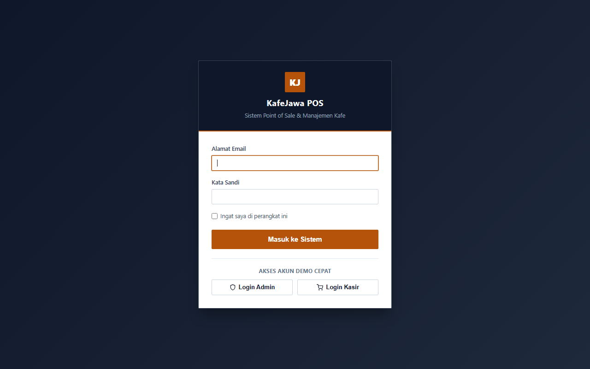
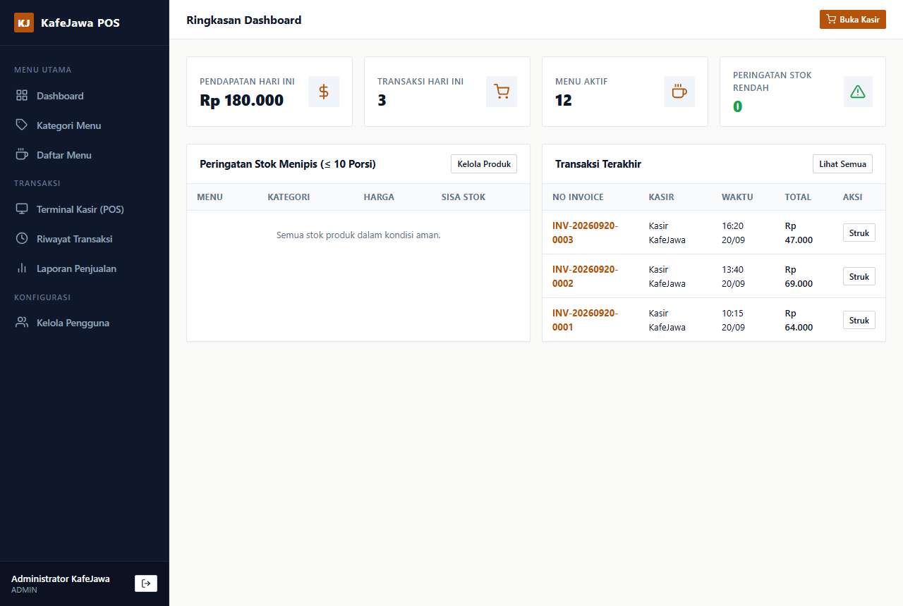
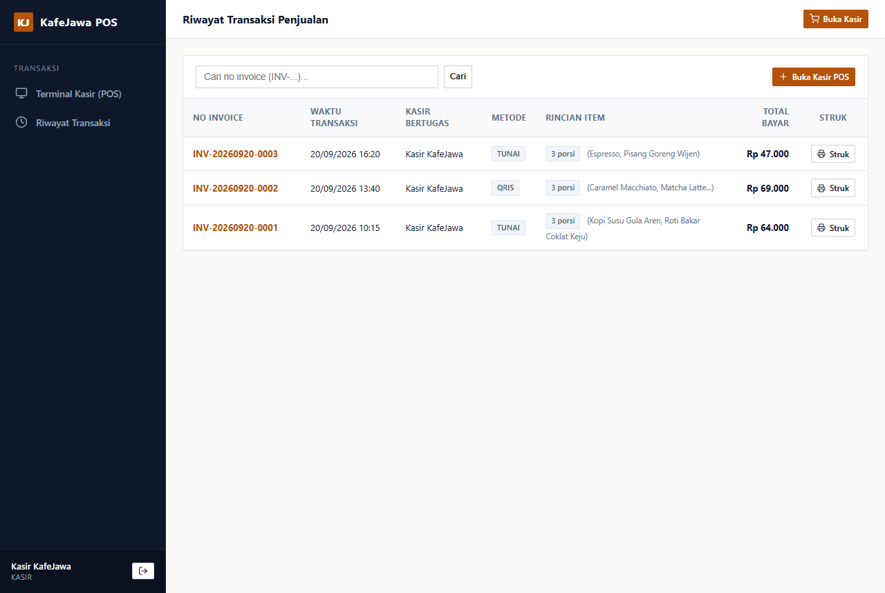
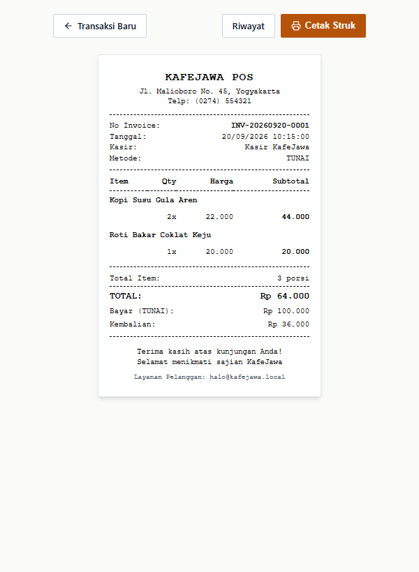

KafeJawa merupakan unit usaha kuliner kopi dan makanan khas Nusantara yang beroperasi secara dinamis dengan volume transaksi harian yang tinggi, khususnya pada periode jam sibuk (peak hours). Saat ini, operasional kasir dan pencatatan transaksi masih menghadapi sejumlah kendala klasik:
Pembangunan Sistem POS (Point of Sale) KafeJawa bertujuan untuk menghadirkan platform kasir digital yang modern, deterministik, berkecepatan tinggi, dan aman dengan sasaran:
| Kode FR | Nama Kebutuhan | Deskripsi Spesifikasi Fungsional |
|---|---|---|
| FR-01 | Autentikasi & Sesi RBAC | Sistem membatasi akses berdasarkan kredensial akun terenkripsi (Bcrypt/Argon2) dengan pemisahan hak akses antara peran Admin dan Kasir. |
| FR-02 | Manajemen Kategori | Admin dapat menambah, melihat, memperbarui, dan menghapus (soft-delete) data kategori produk menu kopi dan makanan. |
| FR-03 | Manajemen Produk, Harga & Gambar | Admin dapat mengelola master produk, kode unik SKU, harga pokok modal, harga jual, kuantitas stok, status aktif, serta unggah dan pengelolaan file gambar menu untuk katalog visual antarmuka kasir. |
| FR-04 | Operasional Kasir (POS) | Kasir dapat mencari menu via SKU/nama, menambah kuantitas pesanan, menghitung subtotal otomatis, dan memvalidasi kecukupan stok secara real-time. |
| FR-05 | Kalkulasi Pembayaran | Sistem menghitung total belanja, menerima input nominal bayar, menghitung uang kembalian secara presisi, serta mendukung metode tunai, QRIS, dan transfer. |
| FR-06 | Generasi Invoice & Struk | Sistem membuat nomor invoice unik berurutan harian (contoh: INV/20260920/0001) dan mencetak struk format printer termal. |
| FR-07 | Otorisasi Void Transaksi | Pembatalan transaksi yang telah selesai hanya dapat dilakukan oleh Admin/Supervisor dengan mencatat alasan pembatalan dan memulihkan kuantitas stok. |
| FR-08 | Pelaporan & Analitik | Admin dapat mengakses rekapitulasi penjualan harian, mingguan, bulanan, omzet kotor, laba kotor, serta produk terlaris. |
deleted_at untuk mencegah penghapusan fisik rekaman transaksi dan produk historis.Pengembangan POS KafeJawa menerapkan arsitektur perangkat lunak modern yang mengutamakan kesederhanaan implementasi, kinerja eksekusi tinggi, kemudahan pengujian, dan kepatuhan standar industri RPL:
| Komponen Arsitektur | Teknologi Terpilih | Rasionalisasi & Keunggulan Rekayasa |
|---|---|---|
| Pola Arsitektur | Model-View-Controller (MVC) | Memisahkan logika bisnis, struktur representasi data relasional, dan antarmuka pengguna secara tegas untuk mempermudah pemeliharaan jangka panjang. |
| Backend Framework | Laravel 12 (PHP 8.2+) | Framework PHP enterprise modern dengan ekosistem routing berkecepatan tinggi, ORM Eloquent tangguh, query builder aman, serta mekanisme migrasi database terstruktur. |
| Database Engine | MySQL 8.0+ / MariaDB (InnoDB) | Mendukung foreign key constraints bertingkat, penanganan transaksi ACID murni, pengindeksan b-tree presisi, serta pengkodean karakter utf8mb4_unicode_ci. |
| Frontend & Layout | Blade Engine & Native CSS | Master layout terpusat tanpa CDN eksternal. Tampilan responsif dengan estetika sharp-edge (radius sudut 2-3px) yang profesional dan ringkas. |
| Protokol Pencetakan | Thermal Raw CSS & PDF Export | Pengaturan media cetak @media print yang dioptimalkan untuk kertas struk termal 58mm/80mm serta konversi dokumen A4 via engine browser headless. |
| Manajemen Dependensi | Composer & NPM Lokal | Seluruh paket pustaka terisolasi dalam direktori lokal proyek tanpa pemanggilan aset via jaringan publik. |
Aksesibilitas sistem dikendalikan melalui dua entitas aktor utama dengan batas wewenang yang tegas:
| Modul / Fitur Sistem | Admin | Kasir | Deskripsi Aturan Akses & Batasan Otorisasi |
|---|---|---|---|
| Autentikasi (Login / Logout) | Ya | Ya | Semua aktor wajib menginput kredensial aktif untuk mendapatkan token sesi. |
| Dashboard Analitik Eksekutif | Ya | Tidak | Ringkasan omzet, laba kotor, grafik penjualan hanya dapat dilihat oleh Admin. |
| Manajemen Master Kategori | Ya | Tidak | Kasir hanya dapat membaca kategori produk dalam antarmuka POS kasir. |
| Manajemen Master Produk & Stok | Ya | Tidak | Penambahan menu, pengubahan harga jual, dan stok awal merupakan wewenang mutlak Admin. |
| Antarmuka Transaksi Kasir (POS) | Ya | Ya | Akses penuh pencarian menu, penambahan keranjang belanja, dan eksekusi pembayaran. |
| Cetak Struk Belanja Pelanggan | Ya | Ya | Kasir dapat langsung mencetak struk setelah status transaksi tersimpan sukses. |
| Pembatalan Transaksi (Void) | Ya | Tidak | Mencegah manipulasi kas. Kasir wajib memanggil supervisor/admin untuk void transaksi. |
| Laporan Rekapitulasi & Riwayat | Ya | Hanya Sesi | Kasir hanya dapat melihat ringkasan total penjualan shift miliknya sendiri saat tutup kasir. |
| Manajemen Pengguna (User Management) | Ya | Tidak | Admin mengelola akun kasir baru, reset password, dan status aktif akun pegawai. |
Diagram Use Case berikut memodelkan batas sistem (system boundary), entitas aktor eksternal, use case fungsional, serta relasi dependensi <<include>> dan <<extend>> secara terstruktur:
Desain basis data POS KafeJawa menerapkan normalisasi tingkat ketiga (3NF) yang terdiri dari 5 entitas relasional terpadu. Hubungan antar tabel dirancang tanpa perpotongan jalur (zero-crossing orthogonal layout) untuk menjamin integritas referensial dan performa kueri optimal:
Kamus data berikut menjabarkan spesifikasi struktural, tipe data fisik, kekangan integritas (constraints), serta aturan bisnis untuk seluruh tabel pada basis data kafejawa:
usersMenyimpan data identitas pegawai kasir dan administrator sistem yang memiliki hak otorisasi login.
| No | Nama Kolom | Tipe Data & Panjang | Null? | Default | Keterangan & Aturan Bisnis |
|---|---|---|---|---|---|
| 1 | id |
BIGINT UNSIGNED | NO | AUTO_INCREMENT | PK Primary key unik pengguna sistem. |
| 2 | name |
VARCHAR(100) | NO | None | Nama lengkap pegawai / kasir yang bertugas. |
| 3 | username |
VARCHAR(50) | NO | None | UQ Nama akun unik untuk proses otentikasi login. |
| 4 | password |
VARCHAR(255) | NO | None | Hash kata sandi menggunakan algoritma Bcrypt/Argon2. |
| 5 | role |
ENUM('admin', 'kasir') | NO | 'kasir' | Role Pembatas hak akses pengguna dalam aplikasi. |
| 6 | created_at |
TIMESTAMP | NO | CURRENT_TIMESTAMP | Waktu perekaman entri akun pengguna ke database. |
| 7 | updated_at |
TIMESTAMP | NO | CURRENT_TIMESTAMP | Waktu pembaruan data pengguna terakhir. |
| 8 | deleted_at |
TIMESTAMP | YES | NULL | Audit trail soft-delete; NULL menandakan akun aktif. |
categoriesMenyimpan klasifikasi pengelompokan menu kafe (misal: Espresso Based, Manual Brew, Non-Coffee, Makanan Berat, Snack).
| No | Nama Kolom | Tipe Data & Panjang | Null? | Default | Keterangan & Aturan Bisnis |
|---|---|---|---|---|---|
| 1 | id |
BIGINT UNSIGNED | NO | AUTO_INCREMENT | PK Primary key unik kategori. |
| 2 | name |
VARCHAR(100) | NO | None | UQ Nama kategori unik yang tampil pada tab POS kasir. |
| 3 | created_at |
TIMESTAMP | NO | CURRENT_TIMESTAMP | Waktu pencatatan kategori baru. |
| 4 | updated_at |
TIMESTAMP | NO | CURRENT_TIMESTAMP | Waktu pembaruan data kategori. |
| 5 | deleted_at |
TIMESTAMP | YES | NULL | Audit trail soft-delete kategori. |
productsMenyimpan katalog item produk makanan/minuman yang siap ditransaksikan di meja kasir.
| No | Nama Kolom | Tipe Data & Panjang | Null? | Default | Keterangan & Aturan Bisnis |
|---|---|---|---|---|---|
| 1 | id |
BIGINT UNSIGNED | NO | AUTO_INCREMENT | PK Primary key unik item produk. |
| 2 | category_id |
BIGINT UNSIGNED | NO | None | FK Terhubung ke categories.id (RESTRICT/CASCADE). |
| 3 | name |
VARCHAR(150) | NO | None | Nama lengkap menu/produk (contoh: Kopi Susu Gula Aren). |
| 4 | sku |
VARCHAR(50) | NO | None | UQ Stock Keeping Unit unik untuk barcode scanning/pencarian cepat. |
| 5 | price |
DECIMAL(12,2) | NO | None | Harga jual resmi ke konsumen per porsi/satuan. |
| 6 | cost_price |
DECIMAL(12,2) | NO | 0.00 | Harga Pokok Penjualan (HPP) untuk kalkulasi laba kotor. |
| 7 | stock |
INT | NO | 0 | Kuantitas fisik produk siap saji yang tersedia saat ini. |
| 8 | is_active |
BOOLEAN | NO | TRUE | Flag status: TRUE = tampil di kasir, FALSE = dinonaktifkan. |
| 9 | image |
VARCHAR(255) | YES | NULL | Path file/URL gambar menu untuk visual grid POS kasir. |
| 10 | created_at |
TIMESTAMP | NO | CURRENT_TIMESTAMP | Waktu penambahan produk ke database. |
| 11 | updated_at |
TIMESTAMP | NO | CURRENT_TIMESTAMP | Waktu pembaruan harga atau kuantitas stok produk. |
| 12 | deleted_at |
TIMESTAMP | YES | NULL | Audit trail soft-delete produk. |
transactionsMenyimpan data ringkasan transaksi penjualan (header faktur) yang dieksekusi oleh kasir.
| No | Nama Kolom | Tipe Data & Panjang | Null? | Default | Keterangan & Aturan Bisnis |
|---|---|---|---|---|---|
| 1 | id |
BIGINT UNSIGNED | NO | AUTO_INCREMENT | PK Primary key unik transaksi penjualan. |
| 2 | invoice_number |
VARCHAR(50) | NO | None | UQ Nomor struk unik (format: INV/YYYYMMDD/XXXXX). |
| 3 | user_id |
BIGINT UNSIGNED | NO | None | FK Terhubung ke users.id identitas kasir bertugas. |
| 4 | total_amount |
DECIMAL(12,2) | NO | None | Akumulasi subtotal dari seluruh item pesanan belanja. |
| 5 | pay_amount |
DECIMAL(12,2) | NO | None | Jumlah uang tunai / digital yang diserahkan pelanggan. |
| 6 | change_amount |
DECIMAL(12,2) | NO | None | Nominal uang kembalian (pay_amount - total_amount). |
| 7 | payment_method |
ENUM('cash','qris','transfer') | NO | 'cash' | Metode pembayaran yang dipilih pembeli saat checkout. |
| 8 | status |
ENUM('completed','canceled') | NO | 'completed' | Status transaksi (completed = valid, canceled = di-void). |
| 9 | notes |
TEXT | YES | NULL | Catatan khusus pesanan atau alasan pembatalan (void). |
| 10 | created_at |
TIMESTAMP | NO | CURRENT_TIMESTAMP | Waktu eksekusi checkout transaksi (terindeks untuk rekap). |
| 11 | updated_at |
TIMESTAMP | NO | CURRENT_TIMESTAMP | Waktu pembaruan status transaksi terakhir. |
| 12 | deleted_at |
TIMESTAMP | YES | NULL | Soft delete untuk mempertahankan arsip finansial audit. |
transaction_detailsMenyimpan rincian item produk yang dibeli pada setiap nomor transaksi penjualan.
| No | Nama Kolom | Tipe Data & Panjang | Null? | Default | Keterangan & Aturan Bisnis |
|---|---|---|---|---|---|
| 1 | id |
BIGINT UNSIGNED | NO | AUTO_INCREMENT | PK Primary key unik baris rincian pesanan. |
| 2 | transaction_id |
BIGINT UNSIGNED | NO | None | FK Terhubung ke transactions.id (CASCADE). |
| 3 | product_id |
BIGINT UNSIGNED | NO | None | FK Terhubung ke products.id (RESTRICT). |
| 4 | quantity |
INT | NO | None | Jumlah kuantitas item produk yang dipesan (harus > 0). |
| 5 | unit_price |
DECIMAL(12,2) | NO | None | Snapshot harga jual per unit saat transaksi berlangsung. |
| 6 | subtotal |
DECIMAL(12,2) | NO | None | Hasil kali harga per unit dengan kuantitas (unit_price * quantity). |
| 7 | created_at |
TIMESTAMP | NO | CURRENT_TIMESTAMP | Waktu pencatatan baris rincian belanja. |
| 8 | updated_at |
TIMESTAMP | NO | CURRENT_TIMESTAMP | Waktu pembaruan baris rincian belanja. |
Prosedur operasi standar (SOP) pelaksanaan transaksi di meja kasir KafeJawa dirancang dengan kontrol validasi ketat:
user_id sesi aktif.≤ stock produk. Jika stok tidak mencukupi, sistem menampilkan peringatan penolakan seketika.total_amount secara deterministik.pay_amount. Sistem memeriksa pay_amount ≥ total_amount dan menghitung change_amount = pay_amount - total_amount.pay_amount = total_amount dan change_amount = 0.00 setelah konfirmasi berhasil diterima.Berikut adalah representasi visual tata letak struk kasir resmi yang dicetak oleh printer termal POS KafeJawa:
Bab ini menyajikan komparasi komprehensif antara Wireframe Perancangan (Blueprint Konseptual) dengan Tangkapan Layar Asli (Real Implementation Screenshot) sistem POS KafeJawa, dilengkapi dengan tabel spesifikasi komponen teknis. Pendekatan ini membuktikan kesesuaian antara rencana arsitektur antarmuka dengan produk perangkat lunak nyata yang telah berfungsi penuh di lingkungan lokal MySQL & Laravel 12.
Halaman autentikasi menyajikan kartu modal terpusat (centered login modal) dengan perlindungan sesi dan token CSRF.

| No | Nama Komponen | Tipe Elemen | Fungsi & Logika Sistem | Validasi & Akses |
|---|---|---|---|---|
| 1 | Input Email | Form Field (email) |
Menerima alamat email akun pengguna terdaftar untuk lookup identitas kredensial pada database. | Wajib diisi (required), format email RFC 5322.Semua Aktor |
| 2 | Input Password | Form Field (password) |
Menerima kata sandi akun pengguna untuk diverifikasi terhadap hash Bcrypt pada tabel users. |
Wajib diisi (required), masking teks keamanan rahasia.Semua Aktor |
| 3 | Tombol Demo Admin | Action Button (Wire) | Mengisi formulir secara otomatis dengan kredensial Administrator (admin@kafejawa.local / admin123). |
Event JavaScript auto-fill formulir pengujian. Admin Demo |
| 4 | Tombol Demo Kasir | Action Button (Wire) | Mengisi formulir secara otomatis dengan kredensial Kasir (kasir@kafejawa.local / kasir123). |
Event JavaScript auto-fill formulir pengujian. Kasir Demo |
| 5 | Tombol Masuk Sistem | Submit Button (Primary) | Mengirimkan payload HTTP POST ke /login dengan validasi sesi terenkripsi dan proteksi token CSRF. |
Validasi kredensial; redirect ke Beranda jika admin atau ke POS jika kasir. Semua Aktor |
Halaman beranda administrator menyajikan visualisasi KPI finansial omzet, pemantauan stok menipis, dan riwayat transaksi terkini.

| No | Nama Komponen | Tipe Elemen | Fungsi & Logika Sistem | Validasi & Akses |
|---|---|---|---|---|
| 1 | Omzet Hari Ini | KPI Card Widget | Menampilkan total akumulasi pendapatan kotor transaksi berstatus completed pada tanggal hari berjalan. |
Agregasi kueri SQL SUM(total_bayar) dengan filter tanggal hari ini.Administrator |
| 2 | Transaksi Hari Ini | KPI Card Widget | Menampilkan total volume faktur penjualan yang sukses diselesaikan kasir pada hari berjalan. | Agregasi kueri SQL COUNT(id) pada tabel transactions hari berjalan.Administrator |
| 3 | Total Menu Aktif | KPI Card Widget | Menampilkan jumlah item produk berkategori aktif yang siap dijual pada katalog terminal POS kasir. | Agregasi kueri SQL COUNT(id) tabel products dengan is_active = 1.Administrator |
| 4 | Total Kategori | KPI Card Widget | Menampilkan jumlah kelompok menu (Kopi, Non-Kopi, Makanan Ringan) yang aktif dalam database. | Agregasi kueri SQL COUNT(id) pada tabel categories yang aktif.Administrator |
| 5 | Peringatan Stok Menipis | Data Table Card | Mendeteksi dan mendaftar seluruh menu dengan kuantitas sisa stok kritis (≤ 10 porsi) untuk mencegah overselling. | Kueri filter stok ≤ 10; menampilkan badge peringatan sisa porsi.Administrator |
| 6 | Transaksi Terkini | Data Table Card | Menampilkan daftar faktur transaksi terbaru lengkap dengan No Invoice, nama kasir, waktu, dan nominal transaksi. | Eager loading relasi transactions dan users; dilengkapi tautan cetak nota.Administrator |
| 7 | Navigasi Sidebar | Navigation Drawer | Menu navigasi utama antarmuka untuk berpindah antar modul master data, transaksi POS, laporan, dan logout. | Dilindungi middleware RBAC (Role-Based Access Control) dan responsif drawer. Administrator |
Halaman riwayat transaksi menyajikan pencatatan seluruh rekonsiliasi faktur kasir, rincian pembayaran, serta akses cetak ulang struk.

| No | Nama Komponen | Tipe Elemen | Fungsi & Logika Sistem | Validasi & Akses |
|---|---|---|---|---|
| 1 | No. Invoice | Data Column (Kode Unik) | Menampilkan nomor identifikasi transaksi berformat INV-YYYYMMDD-XXXX sebagai referensi pelacakan audit. |
Nilai unik terindeks (UNIQUE KEY) pada tabel transactions.Admin & Kasir |
| 2 | Tanggal & Waktu | Data Column (Timestamp) | Menampilkan waktu presisi penyelesaian transaksi kasir dengan format DD/MM/YYYY HH:MM. |
Bersumber dari kolom created_at database tersinkronisasi zona waktu WIB.Admin & Kasir |
| 3 | Kasir Bertugas | Data Column (Akuntabilitas) | Menampilkan nama kasir yang mengoperasikan transaksi dan menerima pembayaran pelanggan. | Relasi foreign key transactions.user_id menuju master users.name.Admin & Kasir |
| 4 | Total Belanja | Data Column (Nominal) | Menampilkan total tagihan belanja hasil kalkulasi subtotal seluruh item menu yang dipesan. | Tipe data DECIMAL(12,2) dengan format mata uang rupiah (Rp xx.xxx).Admin & Kasir |
| 5 | Uang Diterima & Kembalian | Data Column (Finansial) | Menampilkan nominal uang tunai yang diserahkan pelanggan serta uang kembalian yang diberikan kasir. | Tervalidasi pada saat proses transaksi kasir (uang diterima ≥ total belanja). Admin & Kasir |
| 6 | Tombol Cetak Nota Ulang | Action Button (Wire) | Membuka tampilan cetak struk kasir termal (/pos/receipt/{id}) pada tab baru untuk dicetak ulang. |
Layout format termal 58mm/80mm siap cetak melalui dialog cetak browser. Admin & Kasir |
| 7 | Pagination Navigasi | Paginator Bar | Membagi volume data transaksi menjadi beberapa halaman (10-15 per halaman) agar waktu respon cepat. | Paginasi native Laravel dengan navigasi tombol halaman dan query filter. Admin & Kasir |
Struk belanja kasir dirancang dengan format kompak thermal paper 80mm / 58mm untuk kecepatan pencetakan nota fisik.

| No | Nama Komponen | Tipe Elemen | Fungsi & Logika Sistem | Validasi & Akses |
|---|---|---|---|---|
| 1 | Header Identitas Kafe | Text Header (Center) | Menampilkan nama gerai, alamat cabang, kontak, dan akun media sosial resmi. | Format cetak teks termal rata tengah. Publik |
| 2 | Metadata Faktur | Meta Section (Key-Value) | Mencatat No. Invoice unik, tanggal & waktu transaksi, serta nama operator kasir bertugas. | Kunci relasi transaksi kasir untuk audit fisik. Kasir & Pelanggan |
| 3 | Daftar Item Belanjaan | Itemized List (Baris) | Menyajikan rincian nama produk, kuantitas beli, harga satuan, dan subtotal per item. | Snapshot harga saat transaksi berlangsung. Kasir & Pelanggan |
| 4 | Total & Kalkulasi Bayar | Summary Math Section | Menampilkan akumulasi nilai belanja, uang tunai diterima, dan uang kembalian pembeli. | Presisi desimal fixed-point tanpa pembulatan liar. Kasir & Pelanggan |
| 5 | Footer & Pesan Penutup | Notice Section | Menampilkan pesan terima kasih, informasi fasilitas WiFi kafe, dan status keabsahan struk. | Penutup resmi bukti pembayaran fisik pelanggan. Publik |
Berikut adalah naskah lengkap DDL (Data Definition Language) SQL standar MySQL 8.0+ / MariaDB yang tersimpan pada berkas docs/schema.sql. Seluruh perintah dibuat mandiri (self-documenting) tanpa komentar konversasional AI slop: